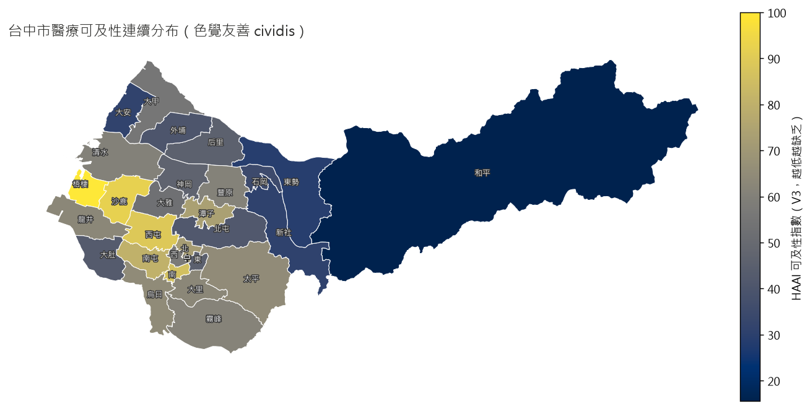
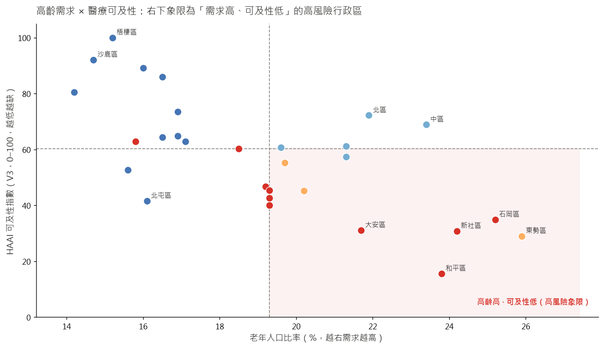
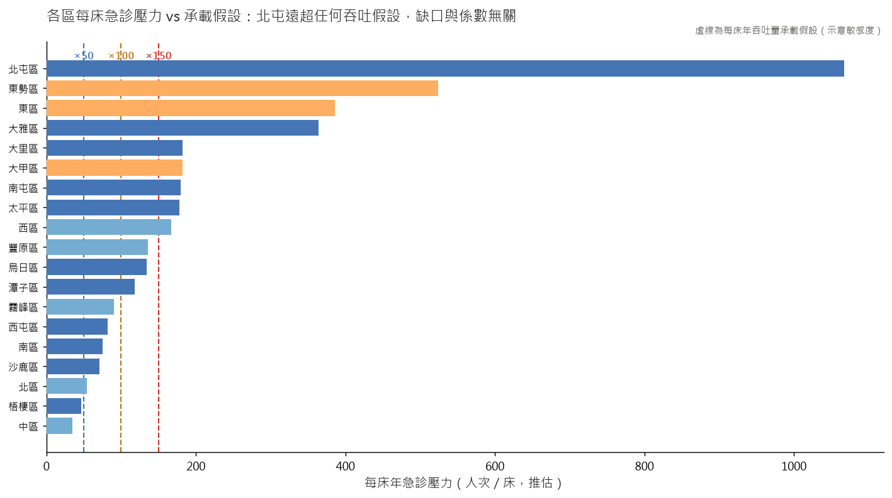

台中市醫療量能名列全台前三，但把 29 個行政區的「資源供給」攤開對上「老化需求」與「就醫距離」，最需要醫療的人，反而最難就醫。
台中市擁有中國醫大附醫、中山醫大附醫、台中榮總三大醫學中心，醫療院所超過 3,600 家，全市平均每萬人病床數約 58 床、高於全台平均。單看總量，這是一座醫療資源充裕的城市。問題不在總量，在於它落在哪裡。
可及性指數（0–100，分數越高代表可及性越佳；缺口 = 100 − 指數）將各區「供給力 × 距離可及性」除以「高齡需求壓力」。分數越低、缺口越大，越是「需求高、可及性低」的高風險區。



| # | 行政區 | 指數 | 因子分解 供給/需求/可及 | 高齡率 | 距大醫院 |
|---|
10 個無在地急診資源的行政區，居民必須跨區就醫。桑基圖呈現各區「往哪裡流」與流量規模，紅色越粗代表越多急診需求被推往鄰近核心區。
點擊上方任一行政區，即時輸出該區的現況診斷、介入建議與驗證指標。以下為兩個全市層級的優先情境（規劃書推估值）。
補上山線四區最大的供給缺口。
不需建院，先改善就醫距離衰減。